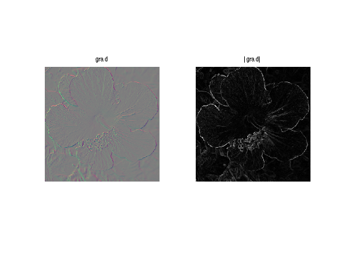
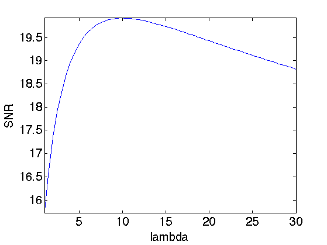
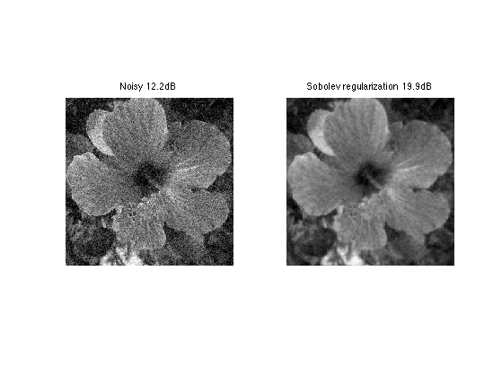
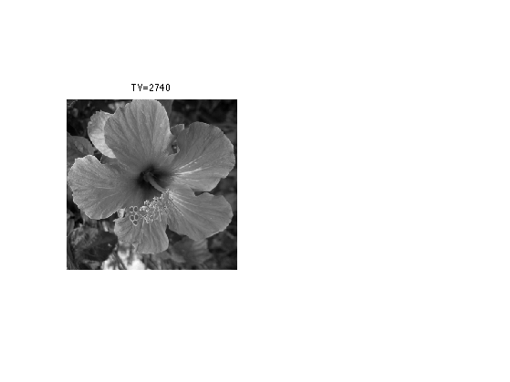
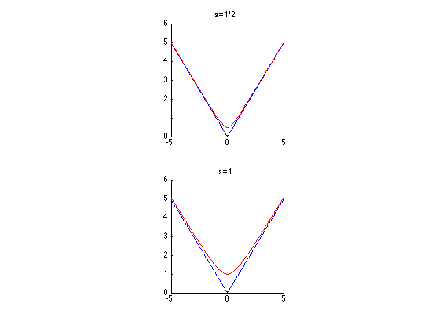
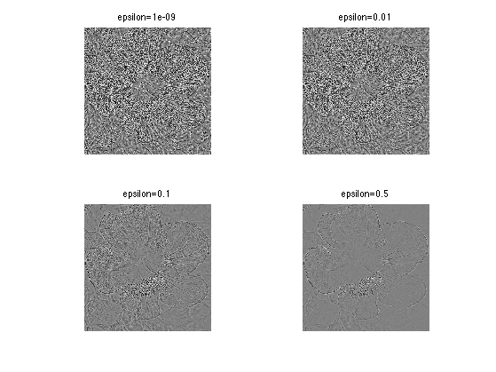
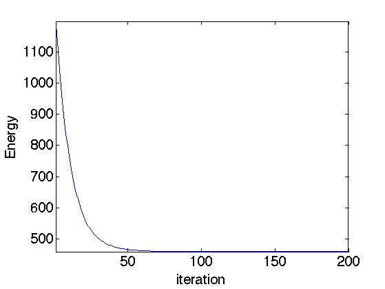
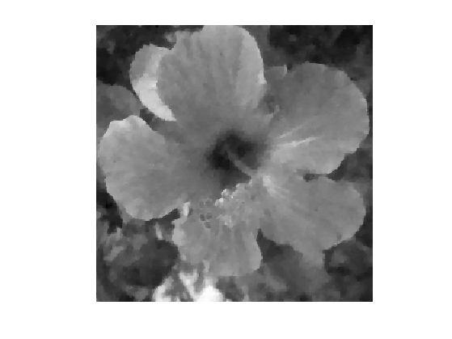
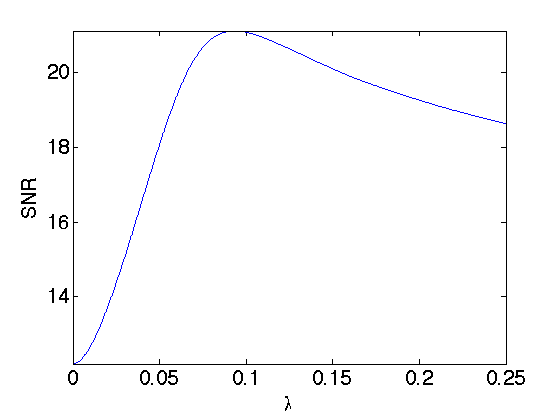
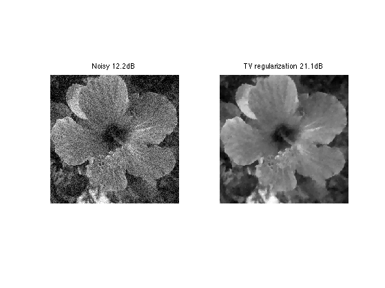

Denoising by Sobolev and Total Variation Regularization
This numerical tour explores the use of variational minimization to perform denoising. It consider the Sobolev and the Total Variation regularization functional (priors).
Contents
Installing toolboxes and setting up the path.
You need to download the following files: signal toolbox and general toolbox.
You need to unzip these toolboxes in your working directory, so that you have toolbox_signal and toolbox_general in your directory.
For Scilab user: you must replace the Matlab comment '%' by its Scilab counterpart '//'.
Recommandation: You should create a text file named for instance numericaltour.sce (in Scilab) or numericaltour.m (in Matlab) to write all the Scilab/Matlab command you want to execute. Then, simply run exec('numericaltour.sce'); (in Scilab) or numericaltour; (in Matlab) to run the commands.
Execute this line only if you are using Matlab.
getd = @(p)path(p,path); % scilab users must *not* execute this
Then you can add the toolboxes to the path.
getd('toolbox_signal/'); getd('toolbox_general/');
Prior and Regularization
For a given image \(f\), a prior \(J(f) \in \mathbb{R}\) assign a score supposed to be small for the image of interest.
A denoising of some noisy image \(y\) is obtained by a variational minimization that mixes a fit to the data (usually using an \(L^2\) norm) and the prior. \[ \min_f \frac{1}{2}\|y-f\|^2 + \lambda J(f) \]
If \(J(f)\) is a convex function of \(f\), then the minimum exists and is unique.
The parameter \(\tau>0\) should be adapted to the noise level. Increasing its value means a more agressive denoising.
If \(J(f)\) is a smooth functional of the image \(f\), a minimizer of this problem can be computed by gradient descent. It defines a series of images \(f^{(\ell)}\) indexed by \(\ell \in \mathbb{N}\) as \[ f^{(\ell+1)} = f^{(\ell)} + \tau \left( f^{(\ell)}-y + \lambda \text{Grad}J(f^{(\ell)}) \right). \]
Note that for \(f^{(\ell)}\) to converge with \(\ell \rightarrow +\infty\) toward a solution of the problem, \(\tau\) needs to be small enough, more precisely, if the functional \(J\) is twice differentiable, \[ \tau < \frac{2}{1 + \lambda \max_f \|D^2 J(f)\|}. \]
Sobolev Prior
The Sobolev image prior is a quadratic prior, i.e. an Hilbert (pseudo)-norm.
First we load a clean image.
n = 256;
name = 'hibiscus';
f0 = load_image(name,n);
f0 = rescale( sum(f0,3) );
For a smooth continuous function \(f\) it is defined as \[J(f) = \int \|\nabla f(x)\|^2 d x \]
Where the gradient vector at point \(x\) is defined as \[ \nabla f(x) = \left( \frac{\partial f(x)}{\partial x_1},\frac{\partial f(x)}{\partial x_2} \right) \]
For a discrete pixelized image \(f \in \mathbb{R}^N\) where \(N=n \times n\) is the number of pixel, \(\nabla f(x) \in \mathbb{R}^2\) is computed using finite difference.
Gr = grad(f0);
One can compute the norm of gradient, \(d(x) = \|\nabla f(x)\| \).
d = sqrt(sum3(Gr.^2,3));
Display.
clf; imageplot(Gr, strcat(['grad']), 1,2,1); imageplot(d, strcat(['|grad|']), 1,2,2);
The Sobolev norm is the (squared) \(L^2\) norm of \(\nabla f \in \mathbb{R}^{N \times 2}\).
sob = sum(d(:).^2);
Heat Regularization for Denoising
Heat regularization smoothes the image using a low pass filter. Increasing the value of \lambda increases the amount of smoothing.
Add some noise to the original image.
sigma = .1; y = f0 + randn(n,n)*sigma;
The solution \(f^{\star}\) of the Sobolev regularization can be computed exactly using the Fourier transform. \[\hat f^{\star}(\omega) = \frac{\hat y(\omega)}{ 1+\lambda S(\omega) } \quad\text{where}\quad S(\omega)=\|\omega\|^2. \]
This shows that \(f^{\star}\) is a filtering of \(y\).
Useful for later: Fourier transform of the observations.
yF = fft2(y);
Compute the Sobolev prior penalty S (rescale to [0,1]).
x = [0:n/2-1, -n/2:-1]; [Y,X] = meshgrid(x,x); S = (X.^2 + Y.^2)*(2/n)^2;
Regularization parameter:
lambda = 20;
Perform the denoising by filtering.
fSob = real( ifft2( yF ./ ( 1 + lambda*S) ) );
Display.
clf; imageplot(clamp(fSob));

Exercice 1: (check the solution) Compute the solution for several value of \(\lambda\) and choose the optimal lambda and the corresponding optimal denoising fSob0. You can increase progressively lambda and reduce considerably the number of iterations.
exo1;
Display best "oracle" denoising result.
esob = snr(f0,fSob0); enoisy = snr(f0,y); clf; imageplot(clamp(y), strcat(['Noisy ' num2str(enoisy,3) 'dB']), 1,2,1); imageplot(clamp(fSob0), strcat(['Sobolev regularization ' num2str(esob,3) 'dB']), 1,2,2);
Total Variation Prior
The total variation is a Banach norm. On the contrary to the Sobolev norm, it is able to take into account step edges.
The total variation of a smooth image \(f\) is defined as \[J(f)=\int \|\nabla f(x)\| d x\]
It is extended to non-smooth images having step discontinuities.
The total variation of an image is also equal to the total length of its level sets. \[J(f)=\int_{-\infty}^{+\infty} L( S_t(f) ) dt\]
Where \(S_t(f)\) is the level set at \(t\) of the image \(f\) \[S_t(f)=\{ x \backslash f(x)=t \}\]
Exercice 2: (check the solution) Compute the total variation of f0.
exo2;
The Gradient of the TV norm is \[ \text{Grad}J(f) = \text{div}\left( \frac{\nabla f}{\|\nabla f\|} \right) . \]
The gradient of the TV norm is not defined if at a pixel \(x\) one has \(\nabla f(x)=0\). This means that the TV norm is difficult to minimize, and its gradient flow is not well defined.
To define a gradient flow, we consider instead a smooth TV norm \[J_\epsilon(f) = \int \sqrt{ \varepsilon^2 + \| \nabla f(x) \|^2 } d x\]
This corresponds to replacing \(\|u\|\) by \( \sqrt{\varepsilon^2 + \|u\|^2} \) which is a smooth function.
We display (in 1D) the smoothing of the absolute value.
u = linspace(-5,5)'; clf; subplot(2,1,1); hold('on'); plot(u, abs(u), 'b'); plot(u, sqrt(.5^2+u.^2), 'r'); title('\epsilon=1/2'); axis('square'); subplot(2,1,2); hold('on'); plot(u, abs(u), 'b'); plot(u, sqrt(1^2+u.^2), 'r'); title('\epsilon=1'); axis('square');
The Gradient of the smoothed TV norm is \[ \text{Grad}J(f) = \text{div}\left( \frac{\nabla f}{\sqrt{\varepsilon^2 + \|\nabla f\|^2}} \right) . \]
When \(\varepsilon\) increases, the smoothed TV gradient approaches the Laplacian (normalized by \(1/\varepsilon\)).
epsilon_list = [1e-9 1e-2 1e-1 .5]; clf; for i=1:length(epsilon_list) G = div( Gr ./ repmat( sqrt( epsilon_list(i)^2 + d.^2 ) , [1 1 2]) ); imageplot(G, strcat(['epsilon=' num2str(epsilon_list(i))]), 2,2,i); end
Total Variation Regulariation for Denoising
Total variation regularization was introduced by Rudin, Osher and Fatemi, to better respect the edge of image than linear filtering.
We set a small enough regularization parameter.
epsilon = 1e-2;
Define the regularization parameter \(\lambda\).
lambda = .1;
The step size for diffusion should satisfy: \[ \tau < \frac{2}{1 + \lambda 8 / \varepsilon} . \]
tau = 2 / ( 1 + lambda * 8 / epsilon);
Initialization of the minimization.
fTV = y;
Compute the gradient of the smoothed TV norm.
Gr = grad(fTV); d = sqrt(sum3(Gr.^2,3)); G = -div( Gr ./ repmat( sqrt( epsilon^2 + d.^2 ) , [1 1 2]) );
One step of descent.
fTV = fTV - tau*( y-fTV + lambda* G);
Exercice 3: (check the solution) Compute the gradient descent and monitor the minimized energy.
exo3;
Display the image.
clf; imageplot(fTV);
Exercice 4: (check the solution) Compute the solution for several value of \(\lambda\) and choose the optimal \(\lambda\) and the corresponding optimal denoising fSob0. You can increase progressively \(\lambda\) and reduce considerably the number of iterations.
exo4;
Display best "oracle" denoising result.
etvr = snr(f0,fTV0); clf; imageplot(clamp(y), strcat(['Noisy ' num2str(enoisy,3) 'dB']), 1,2,1); imageplot(clamp(fTV0), strcat(['TV regularization ' num2str(etvr,3) 'dB']), 1,2,2);
Exercice 5: (check the solution) Compare the TV denoising with a hard thresholding in a translation invariant tight frame of wavelets.
exo5;